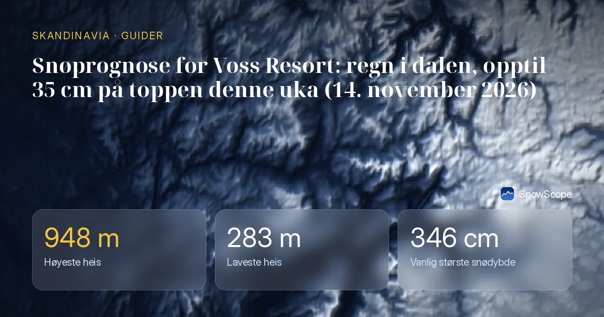

Snøprognose for Voss Resort: regn i dalen, opptil 35 cm på toppen denne uka (14. november 2026)
Voss ligger der Nordsjøens våte vær treffer fjellene frontalt. Nå betyr det at bygda er bar, men de høye ryggen er hvite. Nærmeste målestasjon, Mjølfjell på 695 m og 30 km unna, målte 10 cm 13. november. De kommende sju dagene bringer ordentlig snø til de øvre bakkene, men regn holder basen våt.
Se snøprognosen for Voss Resort Fjellheisar direkte i SnowScope-appenSnødybde, puddervarsler og 3D-kartet, gratis.

Snø over 600 m, regn under
De neste sju dagene viser prognosene om lag 35 cm på toppen (948 m), omkring 28 cm på midtbakken (615 m), og bare omkring 5 cm ved base (283 m). De første to dagene pakker mesteparten av det, med cirka 22 cm som når toppen.
Grunnen til denne delingen er nullgradersgrensen, som ventes omkring 550 til 620 m. Over den linjen kommer all nedbør som snø. Under den dominerer regn—omkring tre firedeler av vannet faller som regn ved base. Dette er typisk for Voss: en smal stripe med tørr snø mellom den våte kysten og de høye toppene.

Hva de siste 46 vintrene forteller oss
I et typisk år har Voss 58 cm 14. november på toppen og 121 cm innen midten av desember. Vinterens midtsjikt bygger seg til 346 cm på toppen innen toppen, vanligvis i mars. Den dypeste vinteren i vår rekke nådde 545 cm. Dette er ekte snørik bakke.
Men de lavere bakkene forteller en annen historie. Ved base er 20 cm mediandybden 14. november—men i én vinter av fire er det ingenting i det hele tatt på denne datoen. Selv innen 21. november viser omkring én vinter av åtte fortsatt bar fjell. Snø ved Voss kommer ikke jevnt; den kommer i pulser, og basen får mesteparten av de våte slamhendingene.
En endring i mønsteret
Den lange rekka viser et skifte. I de første 15 vintrene vi har data for, nådde toppen gjennomsnitt 386 cm. I de siste 15 vintrene falt den medianen til 306 cm. Snødager på toppen falt fra 289 til 252. Fjoråret nådde 247 cm på toppen.
Dette betyr ikke at Voss er i ferd med å gå tom for snø—det leverer fortsatt langt mer enn de fleste norske bakker. Men trenden er reell: de høyeste toppene får nå mindre ekstreme oppbygninger, og de lavere bakkene er blitt mindre pålitelige tidlig i sesongen.
Hvilken høyde passer dine ski
Hvis du skier Voss, velg løypene dine etter høyde. Toppen og de øvre ryggen (800 m og over) vil ha god, varig snødekke innen slutten av denne uken. Midtbakketerreng (omkring 615 m) blir skibar. De lavere delene ned til bygda blir flekkete og blautslam—trygt for vårforhold i midten av november, men ikke for hard snø.
Den innkommende snøen blir tung og våt, spesielt på midtbakkene der luften er varmest. Dette er klassisk snøskredvarsel-terreng på bratte eksposisjoner. Før du går off-piste, sjekk siste melding fra Varsom (NVE).
Vinterens timing: sen blomstring ved sjøen
Voss er ikke en tidlig-sesong-bakke ved base. Nullgradersgrensen etablerer seg ikke permanent før sent november: typisk er mediandatoen for pålitelig snø under 600 m omkring 30. november. Innen da holder basen vanligvis 44 cm, fortsatt beskjeden. Desember bringer det riktige skiftet, med 83 cm mediandybde innen midten av måneden.
Sesongstrukturen er klar: øvre bakker er klare innen midten av november, midtbakker innen sent november, og base innen tidlig desember. Planlegg Voss-besøket ditt med høyde i tankene.
Før du går opp fjellet
Veiforholdene betyr noe ved Voss. Regn og blautslam ventes på bygdenivå denne uken, så vinterdekk eller kjettinger er essensielle hvis du kjører fjelleveienes. E16 og adkomstveienes blir våte.
Voss Resort selv er ikke ennå åpent for daglig skisyting. Det offisielle åpningshelgen kjører 4.–6. desember, med daglig drift fra 11. desember til 11. april. Den tidsplanen avhenger av snø og vær, så sjekk på forhånd.
Tips til skiløpere
- Bratte off-piste-bakker over heisene er modne for snøskredvarsel akkurat nå: fersk, tung snø på tynn base er lærebokutløseren. Sjekk alltid Varsom-snøskredvarslingen før du forlater pisten.
- Nullgradersgrensen ligger omkring 600 m denne uken. Ski den øvre halvdelen av fjellet for god snø; ventes blautslam og regnpåvirket forhold under 600 m.
- Tung, våt snø tar tid å binde og legge seg. Hvis den øvre enden av prognosen blir sann (opptil 43 cm i sju dager), vent en hel dag etter at snøen slutter før du angriper bratt terreng.
- Pakk kjettinger eller montér vinterdekk. Regn dominerer på sjønivå denne uken, så fjelleveienes blir farlige.
- Øvre løyper er ditt beste veddemål inntil sent november. Innen desember vil hele fjellet være mer pålitelig, men for nå er base og lavere midtbakker overgangssonar.
Om tallene
Snødybdene for skistedene er det dypeste snødekket i de øvre bakkene på datoen som vises; de er anslag for et område, ikke en måling i ett punkt. Prognoser kan endre seg. Les alltid det offisielle snøskredvarselet før du kjører utenfor preparert løype.
Offisielle snøskredvarsler: Varsom (NVE)
Siter denne rapporten
For forskning, undervisning eller presse: tallene og diagrammene kan brukes fritt under CC BY 4.0 med denne kildehenvisningen.
SnowScope (2026), Snøprognose for Voss Resort: regn i dalen, opptil 35 cm på toppen denne uka (14. november 2026), https://snowscope.app/blog/nb/2026/11/voss-resort-snow-forecast-14-november-2026.html, hentet 2026-11-14
SnowScope (Atlas Labs). (2026, November 14). Snøprognose for Voss Resort: regn i dalen, opptil 35 cm på toppen denne uka (14. november 2026). SnowScope snow reports. https://snowscope.app/blog/nb/2026/11/voss-resort-snow-forecast-14-november-2026.html
BibTeX
@misc{snowscope2026vossresortsnowforecast14,
author = {{SnowScope (Atlas Labs)}},
title = {Snøprognose for Voss Resort: regn i dalen, opptil 35 cm på toppen denne uka (14. november 2026)},
year = {2026},
month = nov,
howpublished = {\url{https://snowscope.app/blog/nb/2026/11/voss-resort-snow-forecast-14-november-2026.html}},
note = {Published 2026-11-14 14:49 UTC; accessed 2026-11-14}
}· CC BY 4.0 · Metoder, data og verktøy →
Voss Resort Fjellheisar: snø og temperatur etter høyde, i vinter sammenlignet med i fjor (verktøy) →
Følg Voss Resort Fjellheisar
Gratis: en melding når nysnø er på vei, og prognosen hver morgen.